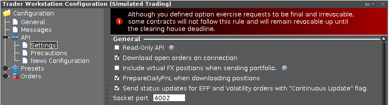

To experiment with the API, a preconfigured interactive irb-console is provided
cd bin && ./console.Install the console in your project
This is easily obtained by copying the bin-directory form the ib-api, ib-extension' or
ib-orientdb` gem to the project-dir
$ cd {your project}
$ ib_gem=`bundle info --path ib-extension` # or ib-api or ib-orientdb
$ cp -r $ib_gem/bin .
Include require [your_project_name] to the scripts.
Run the console
Without parameters it connects to a running Gateway-Application on localhost.
The GUI-Version (TWS) is addressed by calling ./console tws from the command line..
connect.yml.:gateway: 4002
:tws: 7496
:client_id: 2000
Edit the file and ensure that the ports chosen are equal to those specified in the API-section of the
configuration of TWS/Gateway:

---------------------------------------------
Namespace is IB !
---------------------------------------------
06:44:03.998 Connected to server, version: 137,
connection time: 2018-03-21 06:44:03 +0000 local, 2018-03-21T06:44:03+00:00 remote.
06:44:03.999 Got message 15 (IB::Messages::Incoming::ManagedAccounts)
------------------------------- Managed Accounts ----------------------------------
Detected Accounts: DF167347 -- DU167348 -- DU167349
----> C points to the connection-instance
some basic Messages are subscribed and accordingly displayed
The IB::Connection-Object is accessed through C
(for Gateway)
The IB::Gateway-Object is accessed through G
C.send_message :RequestContractDetails, contract: Stock.new( symbol: 'TAP' )
=> 5878
07:10:13.389 Got message 10 (IB::Messages::Incoming::ContractData)
I, [2018-03-21T07:10:13.389943 #22286] INFO -- : <Stock: TAP USD>
07:10:13.390 Got message 52 (IB::Messages::Incoming::ContractDataEnd)
I, [2018-03-21T07:10:13.390092 #22286] INFO -- : <ContractDataEnd: request_id 5878 >
C.received.keys
=> [:ManagedAccounts, :NextValidId, :Alert, :OpenOrder, :ContractData, :ContractDataEnd]
C.received[:ContractData].to_human
=> ["<ContractDetails MOLSON COORS BEVERAGE CO - B, --> TAP, /C/ Beverages, /I/ Consumer, Non-cyclical /SC/ Brewery, md_size_multiplier:100, min_tick:0.01, price_magnifier:1, valid exchanges: SMART,AMEX,NYSE,CBOE,PHLX,ISE,CHX,ARCA,ISLAND,DRCTEDGE,BEX,BATS,EDGEA,CSFBALGO,JEFFALGO,BYX,IEX,EDGX,FOXRIVER,PEARL,NYSENAT,LTSE,MEMX,PSX; order types: ACTIVETIM,AD,ADJUST,ALERT,ALGO,ALLOC,AVGCOST,BASKET,BENCHPX,COND,CONDORDER,DARKONLY,DARKPOLL,DAY,DEACT,DEACTDIS,DEACTEOD,DIS,GAT,GTC,GTD,GTT,HID,IBKRATS,ICE,IMB,IOC,LIT,LMT,LOC,MIT,MKT,MOC,MTL,NGCOMB,NODARK,NONALGO,OCA,OPG,OPGREROUT,PEGBENCH,POSTONLY,PREOPGRTH,REL,RPI,RTH,RTHIGNOPG,SCALE,SCALEODD,SCALERST,SNAPMID,SNAPMKT,SNAPREL,STP,STPLMT,SWEEP,TRAIL,TRAILLIT,TRAILLMT,TRAILMIT,WHATIF >"]
C.received[:ContractData].contract.to_human
=> ["<Stock: TAP USD>"]
Array Expansion
To simplify operations with received data, arbitrary operations may be applied to array’s.
Example: After collecting End-of-Day historical data for a IB::Contract,
the results can be inspected directly:
> eod = IB::Stock.new( symbol: 'GE' ).eod( duration: 10 )
> eod.class => Array
> eod.size => 10
> eod.first.class => IB::Bar
> eod.first.attributes.keys
=> [:time, :open, :high, :low, :close, :volume, :wap, :trades, :created_at]
> eod.close.to_f # instead of eod.close.map{|y| y.close.to_f}
=> [6.89, 7.3, 7.32, 7.35, 7.31, 7.86, 7.66, 7.36, 7.13, 7.54]